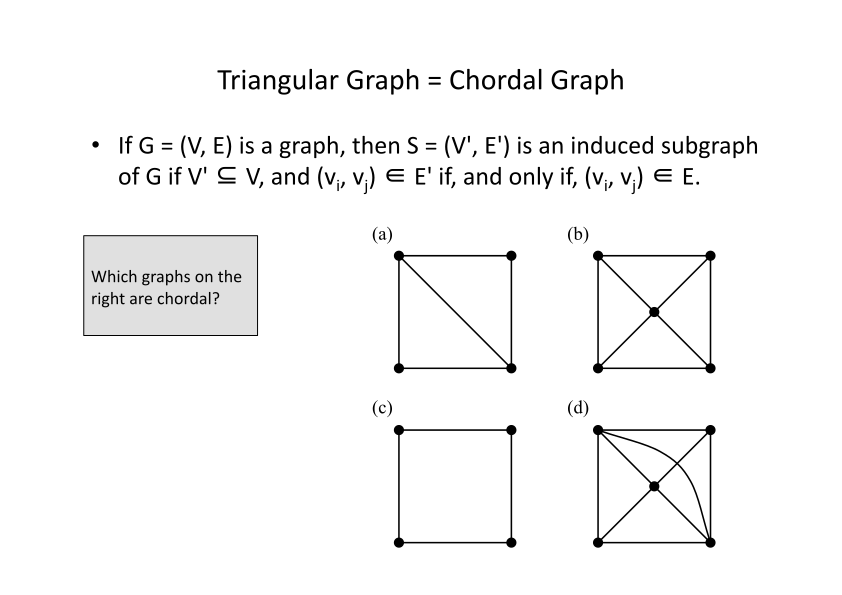
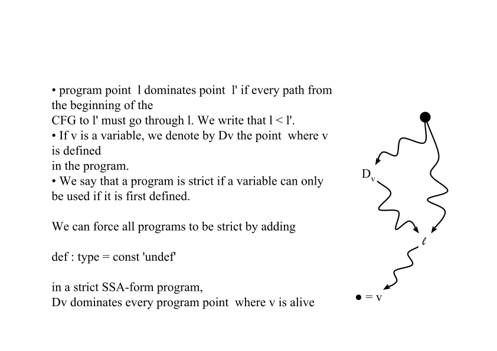
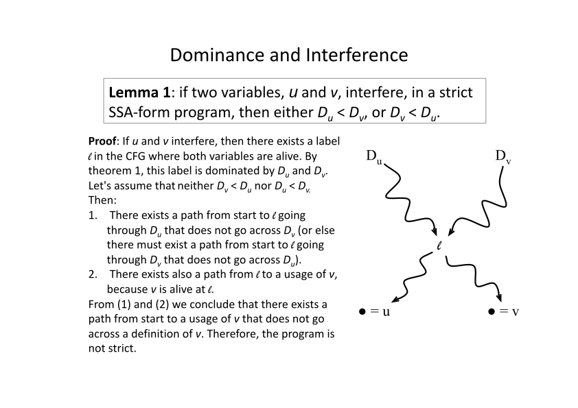
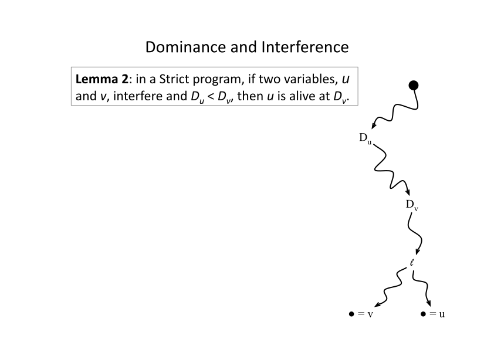
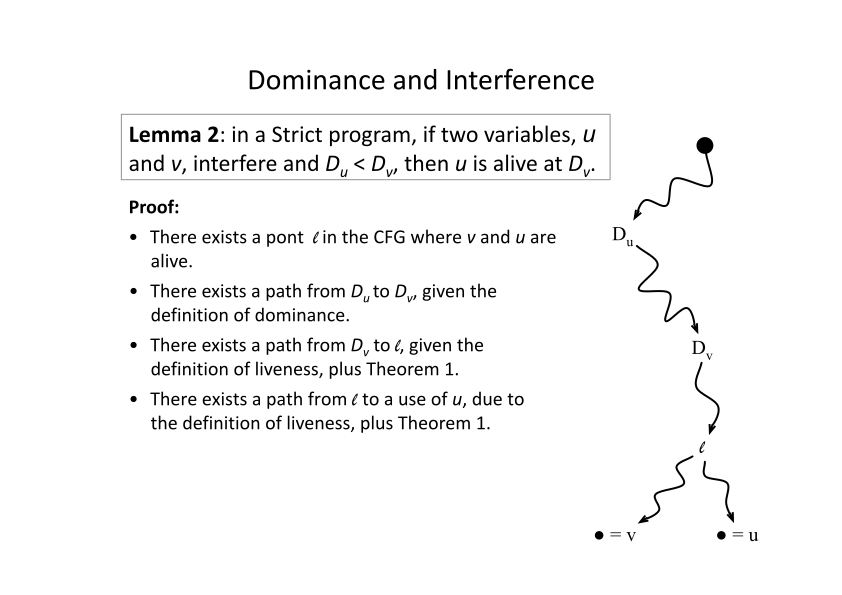

Register allocation is the process of determining storage locations to the values used in a program.
These values can either be stored in registers or in memory.
Registers provide fast access but are limited in number.
Memory has much higher latency and slower access speeds.
A good register allocation strategy keeps frequently accessed variables in registers to maximize performance.
much of the material for these slides comes from fernaod
Aspects
The task of determining the register in which each variable will be stored is known as register assignment.
If a variable must be stored in memory, it is referred to as a spill. Spilling involves identifying which variables need to be mapped to memory.
If the same register can be assigned to two variables related by a move instruction, the move can be eliminated. This optimization is called coalescing.
GPU performance often improves when fewer registers are used.
Variables in Bril are virtual registers. After assignment, they become physical registers.
Register allocators often have to manage constraints. For example, a function argument may need to be placed in a specific physical register.
formal limits
Register allocation is NP complete. Given a program P and K registers, is there an assignment where each variable gets a register and all simultaneously live variables get different registers
Gregory Chaitin showed that if we have a graph that we want to paint with K colors, such that adjacent vertices get different colors we can construct a program where the program can be allocated with K registers iff the graph can be colored with K colors
Chaitin used the interference graph. One vertex for each variable, and edge between variables that are simultaneously live.
Allocation and Liveness
If two variables are alive at the same point, and they have different values, they have to be assigned different registers
Approximate this by ignoring “have different values” - Different registers if alive at the same point.
MaxLive is the max number of values live at the same point
MinReg is the min number of registers we need
minReg <= MaxLive
an example
What is the maximum number of variables alive at any program point?
How is the interference graph of this program?
interference graph
MaxLive = 2 Can we compile this with 2 registers? - Need 3
The interference graph is a pentagon, needed 3 registers.
A pentagon is the smallest graph whose chromatic number (number of colors needed 3 ) is less the maximum clique (2)
SSA Form
with liveness
ssa with interference graph
register allocation
swaps
We need to copy e2 to e, but we have no registers left, so how do we swap them?
swaps via xor
final code
ssa based register allocation
We have been able to compile the SSA-form program with less registers than the minimum that the original program requires.
Two claims
The SSA-form program will never require more registers than the original program.
And we can find the minimum number of registers that the SSA-form program needs in polynomial time.
dominance trees
What is the dominance tree of this program?
dominance tree
dom sub trees
interference graph
Chordal Graphs (triangular graphs)
intersection graph of subtrees
a graph that has no induced subgraph isomorphic to \(c_N\) where $c_N” is a cycle with N nodes and N is greater then 3.
A graph is chordal (or triangulated) if each of its cycles of four or more nodes has a chord, which is an edge joining two nodes that are not adjacent in the cycle. An equivalent definition is that any chordless cycles have at most three nodes. if each of its cycles of four or more nodes has a chord, which is an edge joining two nodes that are not adjacent in the cycle. An equivalent definition is that any chord free cycles have at most three nodes.
what is an induced subgraph
if \(G=(V,E)\) is a graph then the induced subgraph is a subset of the nodes of G plus the edges in G that connect those node
examples of chordal graphs

dominance and interference Thm 1

. . .
proof: suppose not. Then there exists a program point l in the CFG where v is alive, but that is not dominated by v. Thus, there exists a path from l to a usage of v. Therefore, there exists a path from the beginning of the program to a use of v that does not go across the unique definition of v, and the program is not strict.
lemma 1

lemma 2

lemma 2 proof

transitivity of dominance
lemma 3 if u,v, and ware variables, u,v interfere and v,w interfere but u,w do not if Du < Dv then Dv < DW
• We know that either Dv < Dw, or Dw < Dv. This is true because v and w are simultaneously alive, and we have the result of Lemma 1 • If we assume Dw < Dv, then, by Lemma 2, we have that w is alive at Dv • Because u and v also interfere, and Du < Dv, we know, also from Lemma 2, that u is also live at Dv • (by hypothesis u and w do not interfere), we know that Dv < Dw
lemma 1: if two variables, u and v, interfere, in a strict SSA-form program, then either Du < Dv, or Dv < Du. Lemma 2: in a strict program, if two variables, u and v, interfere, Du < Dv, then u is alive at Dv.
once we have an order (the reverse order above), we can greedy color the nodes. When we get to the n’th node, all the neighbors are in a clique and are colored
all nodes in the clique need different colors
In a chordal graph the size of the largest clique equals the chromatic number
if we find the point in the program with max live variables, we know the chromatic number
spilling
spilling
coalescing
if we assign both sides of a copy to the same register, we can eliminate the copy.
input: L list of copy instructions, G=(V,E), K
output: updated graph G'
G' = G
for all x=y in L
sx is the set of colors in the neighborhood of x
sy is the set of colors in the neighborood of y
let c be a color < K that not in either set
add xy a new node xy is ajacent to all node in the union of neighborhoods
remove x and y from G'